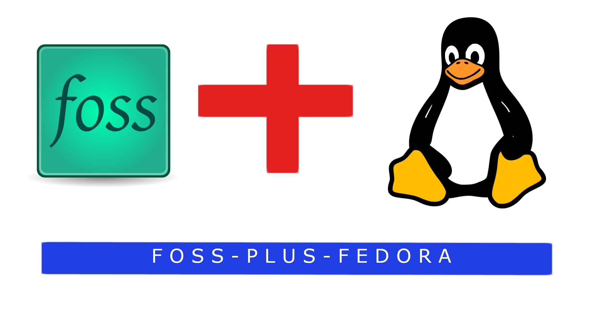

foss-plus-fedora Logo © 2024 by foss-plus-fedora is licensed under CC BY-SA 4.0Just to let you know, this will not affect any trademarks. The Tux Linux Mascot and FOSS Logo are believed to be in the public domain, and do not belong to me. This is not permission to impersonate me.
Back to the Home Paghe